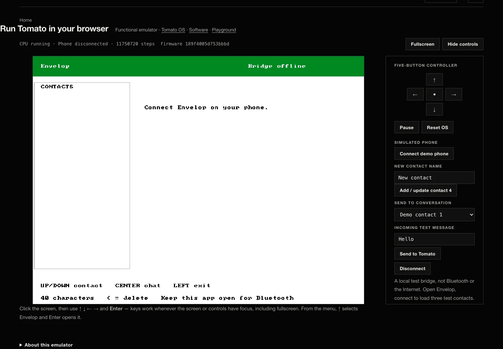

I designed a custom 32-bit computer, implemented it on FPGA, and wrote the software it runs. Now I’m turning that architecture into a complete discrete machine, board by board.
Tyrone Marhguy · Penn Computer Engineering · Independent project
01 / Running on FPGA
A complete FPGA computer with its own software.
Assembly-written Tomato OS booted on the complete FPGA implementation.
32-bit CPU + Tomato OS
The complete Nexys A7 FPGA computer boots the assembly-written Tomato OS v3.0 with fourteen menu entries, including Envelop, games, and system tools. The default CPU clock is 6.25 MHz; 90 MHz is only the nextpnr timing target.
A first-class Tomato application, with honest boundaries.

Current generated OS image · browser CPU emulator · simulated peripherals · bridge offline · not an FPGA result
Source-complete
Envelop firmware, setup data, and a bounded remote executor are linked into Tomato OS v3.0. Web/native clients, backend, and bridge software are available in the separate Envelop project.
A programmed FPGA, attached radio, current authenticated bridge lease, and completed Physical Tomato reply require live evidence. Available bridge software alone is not “online.”
Virtual Tomato
The functional browser emulator runs the generated OS image at ISA level. It is not RTL, FPGA, or the discrete ALU board, and its results remain explicitly labeled.
An 8-bit discrete ALU slice, fabricated and soldered.
Arrival & Assembly · 18 Aug 2026Half-soldered, next to Digital07_alu · first population · CELL 0 / CELL 1Arrival & Assembly · 23 Aug 2026Soldering lights on the loop07_alu · bench · board cutaways
View
Bench · landscape
Clip
~45 s · 3s / 2s still
Tomato’s 8-bit Dual-LUT slice
Lot 07 is the fabricated and soldered 8-bit discrete slice of Tomato’s Dual-LUT ALU. Its bench hardware is real; it is not a complete discrete CPU.
Register, memory, control, and peripheral board work continues. The complete discrete CPU is the build in progress; the FPGA computer is already running.
130 billion test vectors. And a separate formal record.
Recorded ALU run
The verification record reports a 130-billion-vector 32-bit ALU Verilator run checked against a reference model. The reproducible harness is checked in; the full run log is not.
The counter FSM searches every LUT pair for fixed A, B, C, carry, and expected-output values. A hit verifies that one example, not a complete truth table or general function.
I’m interested in detailed criticism of the Dual-LUT datapath, the verification assumptions, and the transition from FPGA to discrete hardware. A counterexample, a reproduced result, or a better timing argument can shape the next version.